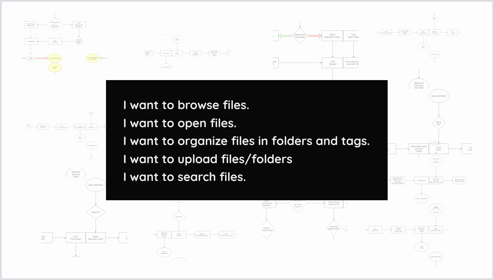
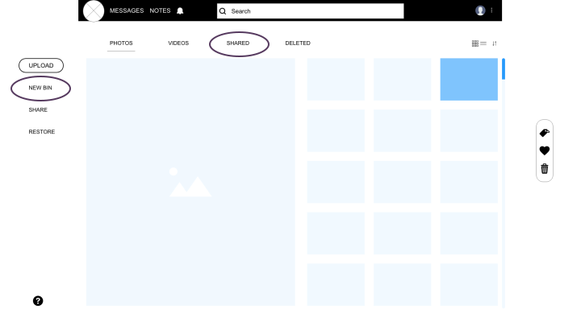
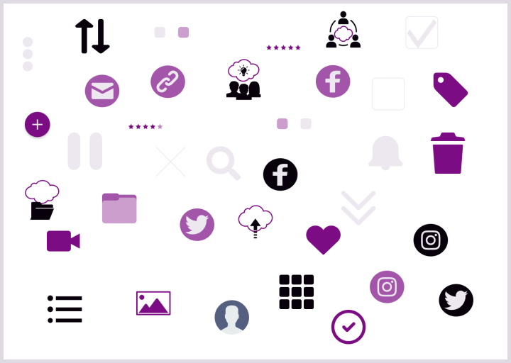

PREMISE
Most cloud storage apps in the market attempt to do everything and store all file types. PX is a cloud storage service that only stores photos and videos, because personal expression deserves its own space.
OVERVIEW
As part of my 32-week design apprenticeship from Bloc, I was tasked to design a cloud storage app from the ground up, based on the following client brief:
- saving content you find on the web (links, images, videos, etc.)
- organizing that content using things like categories, tags groups, and/or folders
- creating content (notes, documents, maybe spreadsheets?)
- uploading files (videos, images, PDFs, etc.) from a computer or mobile device
- sharing a single item with someone else (and vice-versa)
- sharing a folder or group of items with someone else (and vice-versa)
- connecting with other users for real-time collaboration in notes or document
Problem
With the invention of smartphones and social media comes the convenience of and demand for taking photos and videos, which are both space hogs, I come from a video editing background and one of the problems that persists in the film/video industry is the sharing of hours and hours of video footage with your team or clients. I would usually receive hard drives that hold clients’ raw footage, but those hard drives can easily get lost in the mail. When I do receive raw footage from transfer apps, such as WeTransfer, they take days to download. And I’m talking about at least 1TB worth of videos!
But then again, this problem is not exclusive to video professionals. You can ask just about anyone or look at their phone or computer and it’ll more likely be filled with photos and videos. With this comes the need for storage, backup, organization, and sharing.
Solution
So I came up with a cloud storage service for photo/video professionals and enthusiasts I’m calling, PX. It’s different from its competitors in that it’s more personable and focused. It will be able to store high-res videos, organize with smart tags, and have collaboration features, such as sharing and messaging. But most importantly, it’s for photos and videos only.
Roles:
UX/UI Designer - responsible for research, information architecture, branding, and visual design
Deliverables:
Project Intro | Competitive Analysis | User Survey | User Personas | User Stories | User Flows | Content Strategy | Wireframes | Usability Tests, Part 1 | Branding | Mockups | Preference Tests | Usability Tests, Part 2
Tools:
Adobe Creative Suite | Google Forms | Draw.io | Slickplan | Mindmup | Usabilityhub
RESEARCH & DISCOVERY
Goals
- Perform a thorough and substantial research, discover the app inside and out
- Anticipate all the problems I can possibly solve with creating the app
- Come up with a thorough list of questions that can be answered through research
Insights
- All kinds of app should find a way to be a platform for people to connect with each other, instead of isolate
- A more focused app that only does one thing, instead of an all-purpose app can be considered
- I need to narrow down the pricing plans to two in observance of Hick’s Law
COMPETITIVE ANALYSIS
Goals
- Instead of researching the major cloud storage companies like Google Drive and Dropbox, I chose to research pCloud, SugarSync, and zipcloud. The logic to this strategy is that I will learn more about lesser-known companies, because of the fact that they are thriving out in the market, even though they’re smaller and less popular. So what are they doing right alongside Google Drive and Dropbox? What’s keeping them in the game?
- I can also more easily pinpoint the things they are not doing as a point of leverage. Analyzing the bigger companies won’t be as effective, because it’d likely be finding a needle in a haystack, since they’re probably already doing almost everything right.
Insights
- Continuing the research process with a thorough gathering of information and looking at uncommon angles, like small companies, is unexpectedly beneficial. Indeed, thinking outside the box when appropriate can uncover hidden gems. You can sometimes learn more from studying less popular companies and looking at uncommon angles.
-
Many cloud storage services allow users to upload just about any file type, but few exist to house only one or two specific file type. Thus, I decided I want PX to stand out from the competition by exemplifying that less is more. Instead of being all-encompassing, it would only store photos and videos.
Article: Why Great Products Do Only One Thing -
My competitive analysis revealed that a new competitor entering the cloud storage and organization app market should:
- Adopt competitors’ strengths and improve on their weaknesses
- Introduce new features
- Be generous with file size
- Go strong on privacy features
USER SURVEYS
Most use cloud storage for backup, file syncing, and real-time collaboration
62% think being able to store large files is very important
29% described themselves as creative
29% work in technology
Goals
- Create a fun survey with personality to get people interested in participating
- Format questions in the first person point of view to engage participants more effectively
Insights
- Users would appreciate a more visually appealing cloud storage interface, which existing cloud storage don’t have, particularly their dashboards. So I can differentiate my app by having a more visually appealing dashboard.
- Most cloud storage users work in the technology field so my app should have the most advanced and latest features that they can appreciate.
USER PERSONAS

USER STORIES & FLOWS

Onboarding Flow
Goals
- Look at my competitors’ user flows and adapt the good parts from each to form a new user flow.
- Once I come up with a flow, narrow it down even more to make each task take only two clicks at most to complete.
INFORMATION ARCHITECTURE
CONTENT STRATEGY
WIREFAMES
Another first! This was my first time using Adobe XD, Although it’s very similar to Figma, which I’ve used, there was still a little bit of a learning curve.
USABILITY TEST, PART 1

BEFORE

My goal was to make sure that I test both tech-savvy and not tech-savvy users to have a holistic and well-balanced research. This is because I think there’s valuable knowledge to be gained from either group. Tech-savvy users mostly know what they want from the apps they use and they could tell if your app can be more advanced, like having smart tags. Whereas users who are not tech-savvy can more easily determine if my app is just too hard to use. Tech-savvy users are more likely able to figure out how to use a difficult design, while non tech-savvy users won’t be able to and will be quick to let me know if they can’t complete a task.
User Feedback
- Use smart tags, AI features.
- Son’t replace the word “Folder” with “Bins”.
- Shared folder in close proximity to the Share button can be confusing.
VISUAL DESIGN
BRANDING
Brand Story
PX is a cloud storage service that can best be described as technology with a human touch. It has sky-high functionality and down-to-earth feel.
In addition to providing customizable organization and collaboration features, we genuinely care about helping you be more productive and have peace of mind that all your precious memories and creative projects are in a private and secure place. Our goal is to give you a user experience comparable to having a reliable and friendly personal assistant.
Unlike most cloud services where you could store just about any file type, PX is exclusively for storing photos and videos. This is because we want to give you focus. None of the usual noise and clutter that you would typically find on websites.
The name “PX”, short for “pixels” is definitely something that both photo and video connoisseurs would be able to relate to. But this is the third iteration of the brand’s name. At first, it was “bins” in reference to Final Cut Pro X’s organization, where they call folders “bins”. But my logo for this brand name didn’t work out.
So onto the second iteration: “Aspxts”, in reference to “aspect ratio”, which is a word both photo/video professionals and enthusiasts would be familiar with. This name also didn’t work out, because some users I tested weren’t able to get that’s it’s really the word “aspects”.
Purple color palette - both sophisticated and whimsical. Modern, but warm and inviting.
Rounded and friendly

Customized icons complement minimal interface

Since PX is about personalization, all images will have people in it. Overall, the design will be invisible so that all the photos and videos users upload will be centerstage.
LOGO
The logo went through even more iterations, as it updated along with the brand name. I realized I didn’t quite fully grasp the purpose of a logo so I went back to my research and proceeded to sketch new ideas.
MOCKUPS & PROTOTYPE

Landing Page Iterations
Onbaording Iterations

Video Dashboard Iterations
Mockups Overview
Mobile Photo Dashboard Iterations
PREFERENCE TESTS

I tested two different search options between a full search bar and a search icon. I realized I should have provided better options for this test, because people didn’t know what the icon will do. It was a vague option so I revised it and deployed a new version with more detailed options instead of a vague icon.

I also learned about data breaches so after testing if users want the social sign-ins to be on top or bottom, I decided to remove them altogether so I don’t give users the option to unawaringly compromise their personal information for the sake of convenience. As designers, we have an ethical responsibility to assess what type of options we provide users.
A design is never finished. Each iteration produces even more iterations. Users always have valuable input, big or small.
USABILITY TESTS, PART 2

After asking participants about what emotions they felt while exploring PX website, it turned out that users didn’t like the typeface I have chosen.
I can count on users to provide valuable insights. It’s always interesting to have people interact with your design. After this test, I can say thaas adequately addressed all the frustrations and feedback.
REFLECTIONS
Way to Grow!
After spending several weeks designing a cloud storage app from the ground up, I learned more about my strength and weaknesses as a designer, as well as illuminated some improvements I can make.
Going through the design process for the second time in this part of the course allowed me to build upon what I learned in the previous part of the course. I managed to improve on my research skills by being more thorough, become more cohesive with my brand, and have better visual design acumen.
Every design project requires me to do something I’ve never done before so I need to learn how to do it, particularly in using design tools. So in addition to building upon my skills, I also improved on my confidence and willpower. Doing certain things for the first time is rather intimidating and not an easy beast to conquer. Not to mention one of the most uncomfortable experiences you can have! It felt like half of the time, I didn’t know what I was doing. After all the Google searches, Slack questions, and trial & errors, those moments of uncertainty have transformed into learning experiences. As they say, the best way to overcome anything is through it. And that’s exactly what I did to effectively design my own learning experience.
Lastly, it helps to maintain a growth mindset. As technology constantly advances and updates, I can’t know everything there is to know. So all I can do is improve on what I do know, be resourceful and be willing to learn what I still need to know.
Keep learning, keep growing!